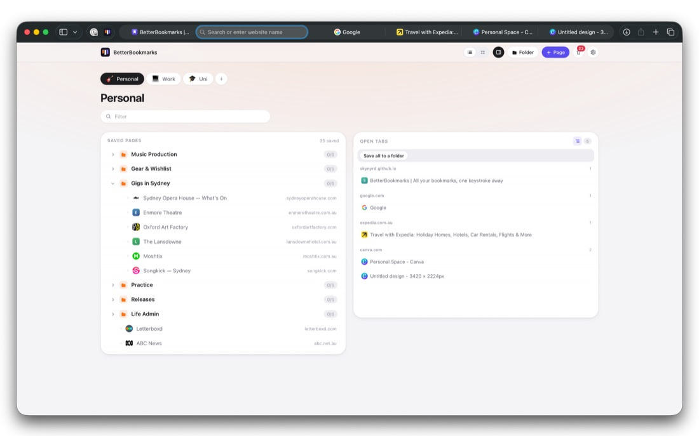

BetterBookmarks
BetterBookmarksSafari extension for macOS
All your bookmarks, one keystroke away.
BetterBookmarks replaces Safari’s start page with a library that has room to grow: as many Spaces as you keep contexts, folders nested as deep as you like, and every page you have saved inside them. ⌃⌘O brings it up from any tab, and it marks the pages that are already open in one. Import what you have today in a single drop, and keep every Mac holding the same library through iCloud.
$9.99 · one‑time purchase · no subscription, no account

A folder is a store, not a session.
Tab groups and session managers tie what you saved to what you have open, so tidying your tabs quietly rewrites your library. BetterBookmarks refuses that trade. Opening an item opens that item only. Closing a tab never changes the folder it came from. Nothing you saved disappears because you cleaned up.
Built for a library that outgrew the bookmarks bar.
Every part of it assumes two things: that you have hundreds of saved pages rather than a dozen, and that you will still be using it in two years.
Spaces, and folders inside folders
Keep work away from cooking with as many Spaces as you need, and nest folders as deep as the subject deserves. Tree view when you want the structure, card view when you want to see where you are going, and ⌃⌘O to get there from any tab. Drag anything anywhere.
Switch, don’t duplicate
Saved pages that are open right now are marked as you look at them. Click one and Safari jumps to the existing tab. Your open tabs sit in a column beside the library, grouped by site, and one search box filters both at once.
Capture without breaking stride
- Toolbar button for the page you are on
- ⌘⇧D files it in the last folder you used, with no interface at all
- Right-click a page or a link to save it
- Save every open tab into a new folder in one go
Import and export, both ways
Bring in bookmarks from Safari, Chrome, Firefox or Arc. Safari hands you a
.zip and you can drop that in as it is. Every import shows a dry-run
preview first, can be undone in one step, and importing the same file twice adds
nothing.
Export a lossless JSON backup or standard bookmarks HTML whenever you like.
One library, every Mac
Sync through your own iCloud, and only when you ask. It merges rather than overwrites, so a page saved on the laptop and a folder renamed on the desktop both survive, and deletions travel too. No account, and nothing of mine in the path.
Seven languages
English, German, Spanish, French, Turkish, Chinese and Hindi. It picks yours on first run and you can change it any time in Settings.
No account, no servers
No sign-in, no analytics, nothing of mine between you and your bookmarks. The extension makes no network requests of its own and ships no content scripts, so nothing of it runs inside the pages you visit. The privacy policy spells that out, and it is short.
Requirements
macOS 15 or later, with Safari 18 or later. After installing, open the app once and switch BetterBookmarks on in Safari → Settings → Extensions. The support page walks through it.
$9.99 · one‑time purchase · no subscription, no account